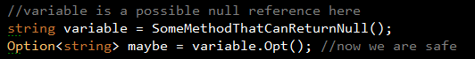
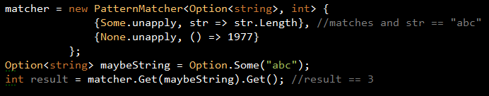

Functional-programming in c#
scalesque enables a functional-programming style in c#. It is an open source micro library written in c# with no dependencies other than .net
Features
Option<T>
'Object reference not set to an instance of an object' - a billion dollar mistake
Option<T>, aka Maybe<T>, is a wrapper for optional references or values. It works by using the type system to treat optional values differently. 
Either<T,U>
Controls orthagonal results of program logic in a typesafe manner. It avoids 'goto' control flow. A programmer is aware of all potential code paths in a routine at compile time.
Pattern matching
scala's pattern matching is similar to c#'s switch-case statement. Switching and pattern matching control flow. Pattern matching goes further by allowing variable assignment (called extraction).
The Edge
I switch between scala and c# regularily. I have found these structures helpful when easing the dissonance between the two languages. Inevitably, cajoling c# to be scala will only get you so far. Programmers familiar with scala's terse syntax will always see c# as verbose and its type inference especially is a challenge. scala's compiler is slow but made from magic beans; csc.exe quickly tells you not to overestimate it.
Wishlist
- Choose an OSS licence
- Something along the lines of scalaz's Validation construct
- Not completely happy with pattern matching
- A side effect PatternMatcher
- nuget package
- Can drop the .net framework 4.0 requirement which currently only needed for Tuple
- Not happy with current head :: tail construct